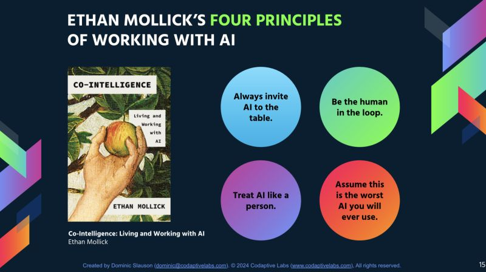

Four Principles of Working with AI
Ethan Mollick’s book Co-Intelligence: Living and Working with AI offers a practical roadmap for navigating our future with AI. Rather than getting lost in technical specifications or dystopian speculation, Mollick shares his insights into four actionable principles. These guidelines aren’t about mastering the technology itself, but about fundamentally rethinking how we approach our work and creative processes in an era of artificial intelligence.

Principle 1: Always Invite AI to the Table
Mollick’s first rule challenges us to abandon our preconceptions about what AI can and cannot do. His concept of the “jagged frontier” suggests that AI capabilities don’t follow predictable patterns. For example, he discusses how AI is great at brainstorming ideas, but can struggle with math. The only way to figure out what AI can and can’t do in your daily life is through experimentation.
This principle is not about blind faith in technology. Instead, it is about cultivating curiosity and willingness to test boundaries. Many professionals dismiss AI for their particular domain, assuming their work is too specialized, too creative, or too nuanced. Mollick argues this assumption itself is the risk. By not exploring AI’s potential applications, we may miss transformative opportunities while competitors who experiment gain ground.
The practical application is to start treating AI as a default collaborator. Writing an email? Draft it with AI. Analyzing data? Let AI suggest patterns. Planning a project? Brainstorm with AI first. Some attempts will fail spectacularly and that’s valuable information too.
In my daily life, I have notices that AI works best as a thought partner during the messy beginning/middle stages of any project. At times when you’re stuck, when you need a second perspective, or when you’re trying to articulate something that’s still forming in your mind. I will brainstorm with it, ask it to explain topics, or have it rephrase something I’ve written in three different tones so I can see which resonates.
Principle 2: Be the Human in the Loop
While the first principle encourages experimentation, the second demands accountability. AI should augment human judgment, not replace it. Mollick emphasizes that the goal isn’t automation for its own sake, but rather creating a collaborative dynamic where human and machine complement each other’s strengths.
This principle recognizes a fundamental truth: AI and humans think differently. Large language models predict likely continuations based on patterns; humans understand context, ethics, and long-term consequences. The most powerful outcomes emerge when we actively engage with AI outputs rather than passively accepting them.
Being “human in the loop” means critically evaluating AI suggestions, catching hallucinations, injecting domain expertise, and making final decisions. It requires staying engaged rather than checking out.
I think this is one of the most crucial aspects of AI. Human oversight isn’t just recommended—it’s essential. While AI may streamline processes and reduce the sheer number of people required for certain routine tasks, the need for human judgment and accountability never disappears. The anxiety about AI replacing jobs is understandable and shouldn’t be dismissed. However, history suggests that technological shifts don’t simply eliminate work—they transform it. Just as the rise of computers didn’t end employment but created entirely new categories of jobs that didn’t exist before, AI will likely generate novel roles we haven’t yet imagined.
Principle 3: Treat AI Like a Person
Perhaps Mollick’s most controversial principle, this guideline has drawn criticism from AI researchers worried about anthropomorphization. But Mollick isn’t making a claim about AI consciousness or sentience. He’s making a pragmatic observation about user experience: treating AI conversationally produces better results than treating it like a search engine.
This approach means using natural language, providing context, asking for clarification, and iterating through dialogue. Viewing AI as a creative partner tends to unlock more innovative applications than viewing it as a tool. The metaphor works because it changes our expectations. We don’t expect human colleagues to be perfect on the first try; we engage in back-and-forth. Similarly, treating AI interactions as conversations rather than commands often leads to surprisingly improved outputs. It’s less about what AI is and more about what mental model helps us work with it most effectively.
While I find this perspective useful for productivity, I can’t ignore the darker implications of encouraging people to treat AI like a person. There’s a meaningful difference between using conversational language as a technique and forming actual emotional attachments to AI systems. We’re already seeing people turn to chatbots as confidants, therapists, and even romantic partners seeking the comfort of conversation without the complexity of real human relationships. Human connection, with all its messiness and unpredictability, is fundamental to our wellbeing. AI can simulate empathy and understanding, but it doesn’t actually care, grow, or exist in the world with us. If “treating AI like a person” leads people to substitute synthetic interaction for genuine social bonds, we risk creating a generation that’s technically proficient but emotionally isolated. The goal should be using AI to enhance our human relationships and free up time for deeper connections, not to replace them with algorithmically optimized substitutes that tell us exactly what we want to hear.
Principle 4: Assume This Is the Worst AI You’ll Ever Use
Mollick’s final principle is true in my opinion. If we accept that AI capabilities will continue improving, then any skills we develop now, any workflows we optimize, any comfort we build with these tools will only become more valuable.
This mindset has strategic implications. Waiting for AI to “mature” before engaging with it means falling behind those who are already learning to collaborate with these systems. The competencies you build working with today’s flawed AI will compound as the technology improves. Conversely, maintaining distance means the gap between your capabilities and those of AI-fluent competitors will only widen.
This principle also offers perspective during moments of frustration. When AI fails at a task or produces nonsensical output, remember: this is the floor, not the ceiling.
Thoughts
What I appreciate most about Mollick’s four principles is that they transform vague anxieties and possibilities into concrete, actionable guidance. Before reading this framework, I had similar feelings about AI, but could not put it into words well. These principles don’t promise easy answers, but they provide a structured way to think about integration. They acknowledge both the potential and the pitfalls, encouraging experimentation while demanding responsibility. In a landscape saturated with either breathless hype or apocalyptic warnings, Mollick offers something refreshingly practical: a roadmap for the messy, iterative process of learning to work alongside these tools. Whether you’re skeptical or enthusiastic about AI, having clear principles to guide your engagement makes the difference between stumbling through this transition and navigating it with intention. These rules won’t solve every dilemma we’ll face in an AI-augmented world, but they offer a solid foundation for developing our own judgment—and ultimately, that’s exactly what we need most.